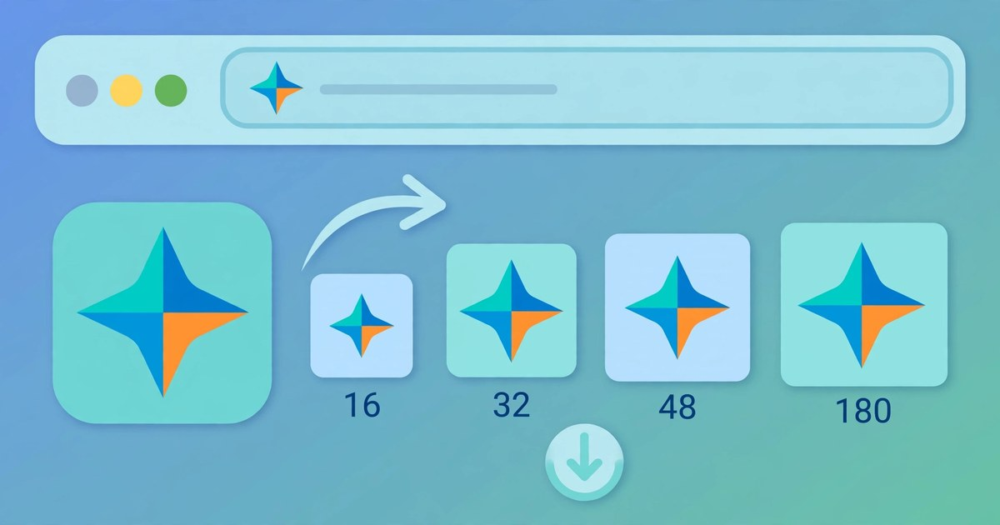

How to Create a Favicon Online
Turn any image into a PNG favicon set in four sizes — free, no signup.
November 11, 2026 · 5 min read

Open the Favicon Generator, upload any image, and download a PNG favicon set in four sizes — 16×16, 32×32, 48×48 and 180×180. The tool crops the centre square of your image automatically and gives you one download button per size. Free, no signup, and your image never leaves your browser.
What a favicon is, and what the tool makes
A favicon is the small icon in a browser tab next to your page title, in bookmarks, and on a phone home screen when someone saves your site. Without one, the tab shows a blank page icon — a small sign that a site is unfinished.
The tool builds a PNG favicon set, not a .ico file: modern browsers accept PNG favicons, and four separate PNG files are simpler to use than one .ico bundle. You get one file per size, named plainly — favicon-16x16.png, favicon-32x32.png, favicon-48x48.png and favicon-180x180.png — so you can upload exactly the sizes you need and link them from your page.
Everything happens in your browser: the image is read locally and never sent to a server, which matters when the source is a client logo or an unreleased brand mark.
Create a favicon in 4 steps
- Open the Favicon Generator — it loads instantly, no account needed.
- Upload an image. Choose a JPG, PNG or WebP image. A square image at least 512 pixels wide gives the sharpest result, but a wide or tall image works too.
- Check the square-crop preview. The tool crops the centre square of your image and shows it in a large preview, so you can see exactly what every size will be cut from.
- Download the sizes you need. Each size has its own Download PNG button. Click one and the file saves as, for example, favicon-32x32.png, with a note confirming the download.
A worked example: a wide logo, cropped to a square
Say your logo is a wide banner, 1200 × 800 pixels. A favicon has to be square, so the tool takes the centre square: side 800 pixels, starting at x = (1200 − 800) ÷ 2 = 200, y = 0. The region used is x 200 to 1000, y 0 to 800 — the middle of the banner, with 200 pixels trimmed off each end.
A tall image works the same way: a 600 × 900 photo gives a 600-pixel square starting at y = (900 − 600) ÷ 2 = 150, cropped y 150 to 750. A square image needs no crop: a 1024 × 1024 logo starts at x = 0, y = 0, and the whole image is used.
That is why the preview matters: if your logo's important part sits near the edge of a wide banner, the centre crop will cut it off. Re-centre it first, or use a square version of the logo.
A worked example: how small each size really is
The four sizes hold very different amounts of picture:
16 × 16 = 256 pixels. 32 × 32 = 1,024 pixels. 48 × 48 = 2,304 pixels. 180 × 180 = 32,400 pixels. The whole set together is 256 + 1,024 + 2,304 + 32,400 = 35,984 pixels — and the 180-pixel icon alone holds about 90% of them.
From the 800-pixel crop to the smallest favicon is 800 ÷ 16 = 50 — your image shrunk 50 times. At that scale fine detail and small text disappear, so bold shapes and one strong colour survive while busy logos do not.
Which size goes where
| Size | Used for | Why it matters |
|---|---|---|
| 16×16 | Browser tabs, address bar | The classic favicon — the tiny icon you see every time you open a tab |
| 32×32 | Tabs on high-resolution screens, bookmarks | High-resolution displays show the 32-pixel version, so it stays sharp |
| 48×48 | Windows taskbar and desktop shortcuts | The size Windows uses for pinned sites and shortcuts |
| 180×180 | Apple touch icon, phone home screens | The size iOS uses when someone saves your site to their home screen |
Adding the favicon to your site
Upload the files with your website, then add a link tag for each size inside your page's <head> — for the standard size:
<link rel="icon" type="image/png" sizes="32x32" href="favicon-32x32.png">
For the Apple touch icon the tag uses rel="apple-touch-icon" instead of rel="icon", with sizes="180x180" and href="favicon-180x180.png". On a multi-page site, add the tags to your shared header or template so every page gets the icon.
Browsers cache favicons aggressively: if you replace one and the old icon still shows, hard-refresh (Ctrl + Shift + R on Windows, Cmd + Shift + R on Mac) — the new file is usually there, the browser is just showing the stored copy.
5 mistakes that waste time with favicons
- Using a text-heavy logo. A company name in small letters is unreadable at 16 pixels. Use a single letter, a simple symbol or a bold shape instead.
- Ignoring the centre crop. A wide banner logo loses its left and right edges. Check the square-crop preview, and if the important part sits at an edge, re-centre it or use a square version of the artwork.
- Starting from a tiny source image. A 64×64 picture stretched up to 180×180 goes soft and blurry — the tool cannot invent detail. Start at 512 pixels or larger so every size is scaled down, never up.
- Expecting a .ico file. This tool makes PNG files. Do not search for a .ico download that is not there — modern browsers accept the PNG set, linked with the tags shown above.
- Uploading a non-image file by accident. A PDF or a ZIP is not an image, and the tool says so plainly: "That file is not an image. Please choose a JPG, PNG or WebP image." Pick the image file, not the folder it came in.
Frequently asked questions
Is the Favicon Generator really free?
Yes — every favicon size you generate and download is free, with no account, no signup and nothing to install. Your image is processed in your browser and never uploaded.
Does it make a .ico file?
No. The tool generates a PNG favicon set — 16×16, 32×32, 48×48 and 180×180 — and modern browsers accept PNG favicons. You add a link tag such as <link rel="icon" type="image/png" sizes="32x32" href="favicon-32x32.png"> to your page.
What image works best for a favicon?
A square image at least 512 pixels wide, with a simple bold shape or a single letter — anything detailed or text-heavy turns to mush at 16 pixels. A large square or wide image also works, because the tool crops the centre square automatically.
My image is not square — will it still work?
Yes. The tool takes the centre square of your image and uses that for every size. A 1200×800 logo becomes an 800×800 square cropped from x=200 to x=1000; the preview shows the exact region before you download.
Related tools: Favicon Generator · Image Resizer · Image Cropper · Image Format Converter · QR Code Generator